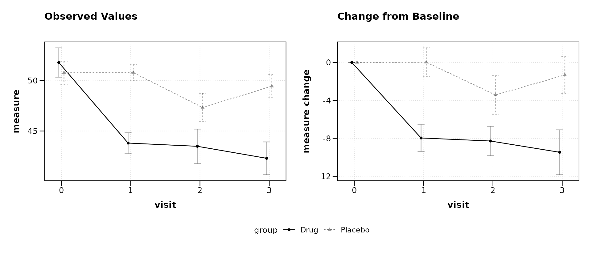
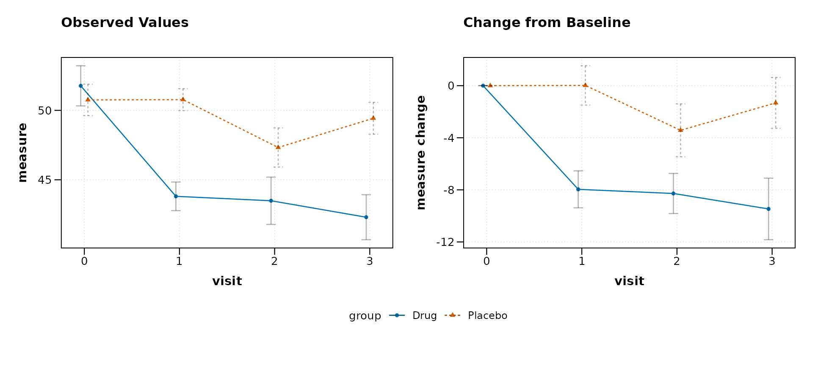
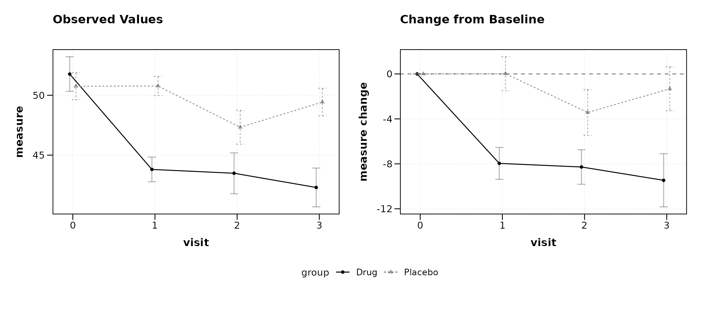
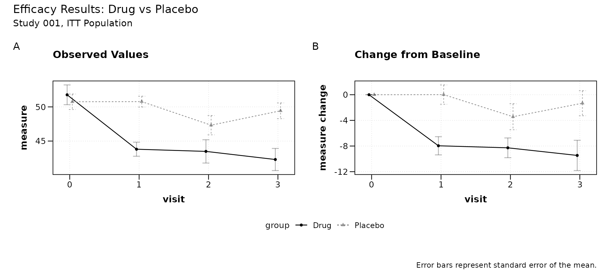
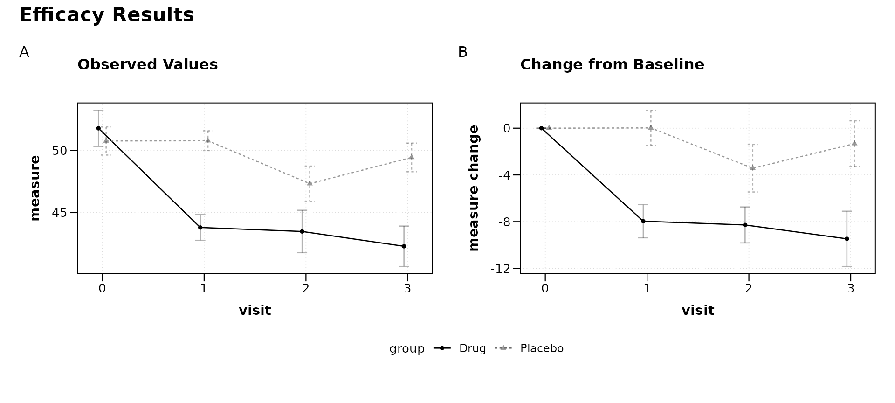
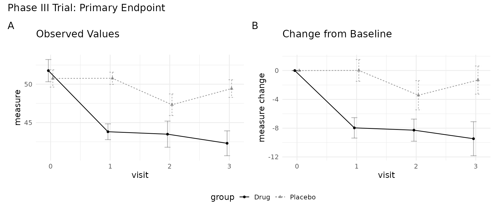
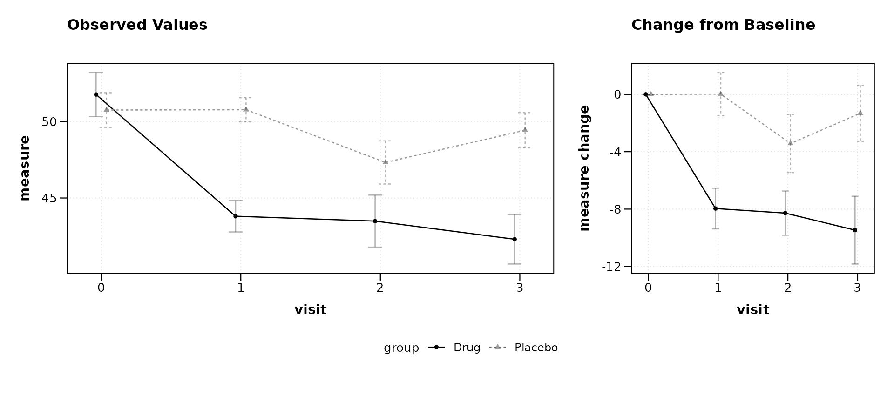

Customizing Combined Plots
Ronald (Ryy) G. Thomas
2026-05-01
Source:vignettes/customizing-combined-plots.Rmd
customizing-combined-plots.RmdOverview
When lplot() is called with
plot_type = "both", it returns a patchwork object that
places the observed values and change-from-baseline plots side by side.
This object can be modified after creation using two patchwork
operators:
-
&applies a modification to all panels -
+applies a modification to the last panel only
This vignette demonstrates common post-creation customizations.
Base combined plot
p <- lplot(trial, score ~ visit | arm, baseline_value = 0,
plot_type = "both")
#> Warning: The `size` argument of `element_line()` is deprecated as of ggplot2 3.4.0.
#> ℹ Please use the `linewidth` argument instead.
#> ℹ The deprecated feature was likely used in the zzlongplot package.
#> Please report the issue at <https://github.com/rgt47/zzlongplot/issues>.
#> This warning is displayed once per session.
#> Call `lifecycle::last_lifecycle_warnings()` to see where this warning was
#> generated.
#> Warning: The `size` argument of `element_rect()` is deprecated as of ggplot2 3.4.0.
#> ℹ Please use the `linewidth` argument instead.
#> ℹ The deprecated feature was likely used in the zzlongplot package.
#> Please report the issue at <https://github.com/rgt47/zzlongplot/issues>.
#> This warning is displayed once per session.
#> Call `lifecycle::last_lifecycle_warnings()` to see where this warning was
#> generated.
p
Modifying all panels with &
The & operator passes a ggplot2 element to every
panel in the composition. This is useful for global theme changes, font
adjustments, or color overrides.
Override group colors
p & scale_color_manual(values = c("Drug" = "#0072B2",
"Placebo" = "#D55E00"))
#> Scale for colour is already present.
#> Adding another scale for colour, which will replace the existing scale.
#> Scale for colour is already present.
#> Adding another scale for colour, which will replace the existing scale.
Remove gridlines
p & theme(panel.grid.minor = element_blank(),
panel.grid.major.x = element_blank())Modifying a single panel with +
The + operator targets only the last panel (the change
plot in a "both" layout). This allows selective
modifications when the two panels need different treatment.
Add a reference line to the change plot
p + geom_hline(yintercept = 0, linetype = "dashed",
color = "grey50")
Adding overall annotations
The plot_annotation() function from patchwork adds
titles, subtitles, captions, and tag labels that span the entire
composition, sitting above or below the individual panel labels.
p + plot_annotation(
title = "Efficacy Results: Drug vs Placebo",
subtitle = "Study 001, ITT Population",
caption = "Error bars represent standard error of the mean.",
tag_levels = "A"
)
Panel tags (tag_levels = "A") label each panel as (A),
(B), etc., which is a common requirement for journal submissions.
Styling the annotation
Annotation text inherits from the plot theme but can be overridden:
p + plot_annotation(
title = "Efficacy Results",
tag_levels = "A",
theme = theme(
plot.title = element_text(face = "bold", size = 16),
plot.tag = element_text(face = "bold")
)
)
Combining multiple modifications
The operators can be chained. Use & for global
changes first, then + for composition-level
annotations.
(p &
theme_minimal() &
theme(legend.position = "bottom",
text = element_text(size = 12))) +
plot_annotation(
title = "Phase III Trial: Primary Endpoint",
tag_levels = "A"
)
Controlling layout
The layout itself can be adjusted after creation using
plot_layout():
p + plot_layout(widths = c(2, 1))
This produces a wider observed panel and a narrower change panel, which can be useful when the change plot carries less visual complexity.
Summary
| Operator | Scope | Example |
|---|---|---|
& |
All panels | p & theme_bw() |
+ |
Last panel (or annotation) | p + geom_hline(...) |
+ plot_annotation() |
Entire composition | titles, tags, captions |
+ plot_layout() |
Entire composition | widths, heights, guides |
Because lplot() returns a standard patchwork object, any
technique documented in the patchwork package
applies directly.